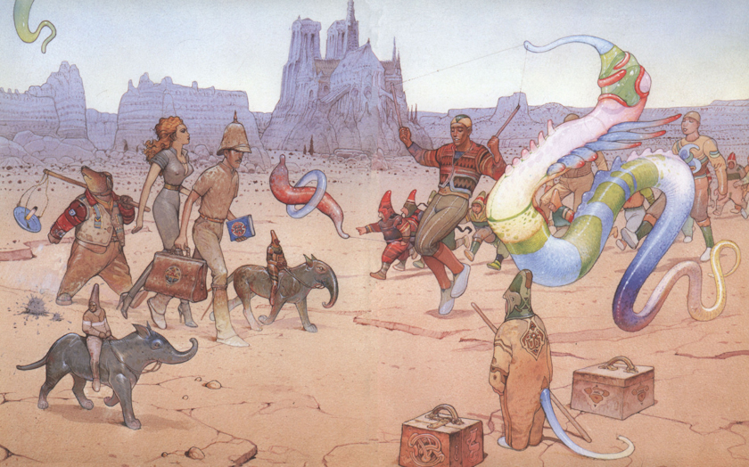

Jean Giraud was a French artist, cartoonist and writer who worked in the Franco-Belgian bandes dessinees tradition (A comic industry created for french and belgian readership.) His 50 year career as an artist has seen his art anchored at the heart of modern sci-fi and fantasy under the Pseudonym Moebius. He got his start in the comic world working on a western comic strip BlueBerry but eventually left that behind in pursuit of his own artistic visions. His artwork Imagined alien civilizations and bizzare desert worlds which produced the pieces of The Airtight Garage, The long tomorrow, and Arzach. His work inspired many of the great sci-fi film directors such as Ridley scott and Alejandro Jodorowsky
